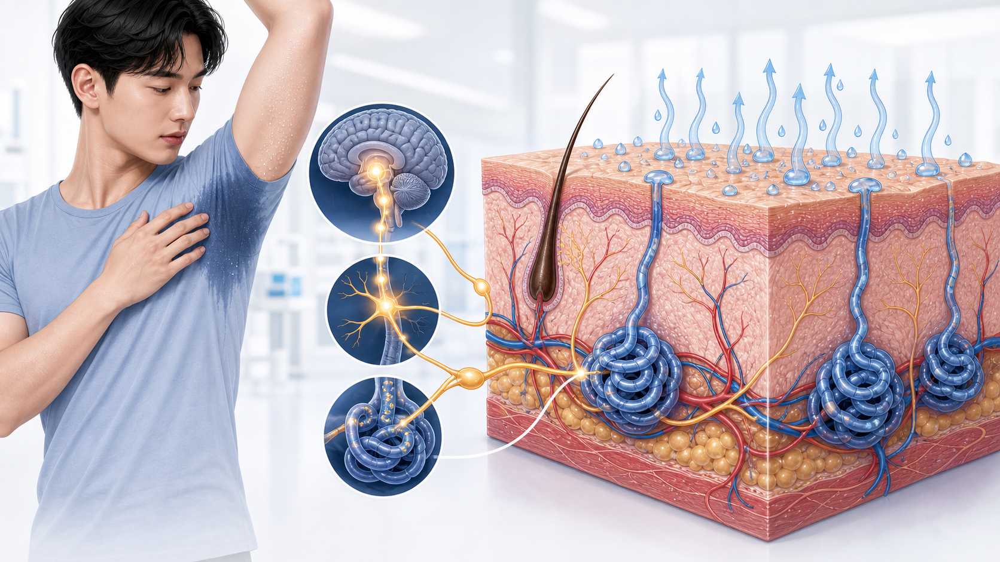
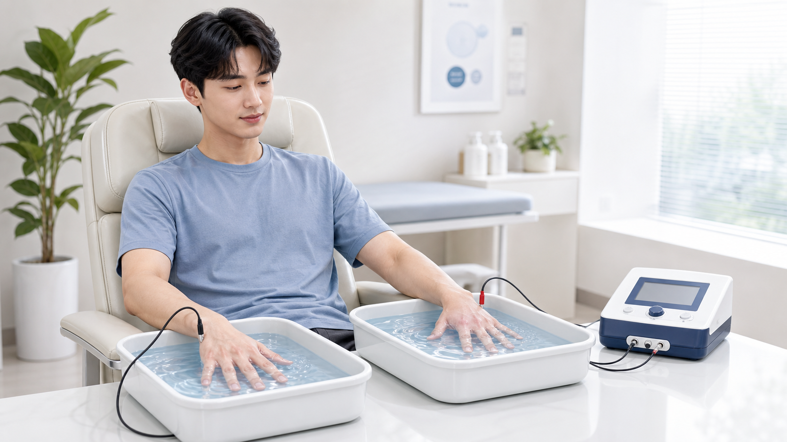

20대 남성 다한증
원인부터 치료 순서까지
손·발·겨드랑이 땀이 생활을 방해할 때, 원발성 여부를 확인하고 단계적으로 치료합니다
20대 초반이면 먼저 원발성 국소 다한증을 봅니다
특정 부위·양측성·수면 중 호전이면 전신질환보다 체질성 땀 분비 조절 문제가 흔합니다
사춘기-20대 초반 시작, 손·발·겨드랑이 중심, 양쪽이 비슷하고 긴장·더위에 악화됩니다.
전신으로 땀이 나거나 밤에 흠뻑 젖는 경우, 체중감소·열·두근거림이 있으면 다른 원인부터 확인합니다.
완전 무한증보다 “일상 방해 감소”가 현실적인 목표입니다. HDSS 1-2점 개선을 추적합니다.
진단은 “6개월 + 생활 방해 + 국소 패턴”입니다
검사보다 문진과 부위 확인이 먼저이며, 원발성 기준을 빠짐없이 확인합니다
6개월 지속
뚜렷한 원인 없이 반복되는 국소 땀이 6개월 이상 이어졌는지 확인합니다.
양측·대칭
한쪽만 심하면 신경학적·피부 국소 원인 감별이 필요합니다.
일상 방해·주 1회 이상
악수, 필기, 운동, 대인관계, 옷 젖음 등 기능 손상을 묻습니다.
25세 전 시작·수면 중 호전
가족력도 함께 확인합니다. 자는 동안 계속 젖으면 전신 원인을 봅니다.

부위별로 치료가 달라집니다
손·발·겨드랑이·얼굴/두피를 나누어 기록하면 치료 선택과 의뢰 시점이 명확해집니다
손바닥
악수·필기·휴대폰 터치 불편. 군 병역 기록에서는 손바닥 땀 양상이 특히 중요합니다.
발바닥
양말 젖음, 냄새, 피부 짓무름. 손과 함께 이온영동을 고려하기 쉽습니다.
겨드랑이
옷 젖음·냄새 걱정. 외용제, 국소 항콜린제, 보툴리눔 독소 선택지가 많습니다.
얼굴·두피
사회적 긴장과 연결되기 쉽습니다. 약물 부작용과 원인 질환 감별이 더 중요합니다.
악화 요인
더위, 운동, 발표, 카페인, 매운 음식, 스트레스와의 연결을 기록합니다.
생활 영향
피부 증상만이 아니라 회피 행동, 자신감 저하, 불안·우울 동반 여부를 함께 봅니다.
HDSS로 중증도와 치료 반응을 숫자로 봅니다
“불편하다”를 1-4단계로 기록하면 치료 실패와 다음 단계가 분명해집니다
겨드랑이는 외용제부터 정확히 써 봅니다
효과가 없던 경우도 사용 시간·피부 상태·자극 관리가 맞지 않아서 실패한 일이 많습니다
알루미늄클로라이드
10-20% 제품을 마른 피부에 취침 전 바르고 6-8시간 뒤 씻어냅니다.
국소 항콜린제
겨드랑이용 소프피로니움 5% 겔 등 처방 선택지를 고려합니다.
마른 피부·밤 사용
면도 직후, 상처, 젖은 피부에는 자극이 늘 수 있어 피합니다.
눈·입 접촉 주의
손을 씻고, 흐릿함·입마름·소변 불편 같은 항콜린 부작용을 확인합니다.
4주 뒤 HDSS 재평가
1개월 사용에도 HDSS가 전혀 내려가지 않으면 다음 단계로 넘어갑니다.
자극이 치료 실패는 아님
빈도 조절, 보습, 제형 변경으로 조절되면 같은 단계에서 계속할 수 있습니다.
손·발은 이온영동이 현실적인 다음 단계입니다
시술보다 먼저 반복 치료와 유지 계획을 세우면 보상성 다한증 걱정 없이 접근할 수 있습니다
초기 2-4주
주 2-4회, 20-30분씩 반복합니다. 효과가 생기면 간격을 늘려 유지합니다.
유지 치료
개인별 재발 간격에 맞춰 주 1회 또는 격주로 조절합니다.
금기 확인
심박동기, 부정맥, 금속 삽입물, 임신 가능성이 있으면 먼저 상담합니다.
실패 시 보툴리눔 독소
손바닥은 통증 조절·일시적 손 힘 약화 가능성을 설명하고 결정합니다.

먹는 항콜린제는 “상황 선택형”으로 씁니다
20대 활동량이 많은 남성은 운동·더위·운전·소변 증상을 함께 고려해야 합니다
도움이 되는 경우
- 시험·면접·발표처럼 예측 가능한 짧은 상황에서 단기 사용을 검토합니다.
- 여러 부위가 함께 불편하고 외용제·이온영동만으로 부족할 때 고려합니다.
- 최저 용량부터 입마름, 변비, 졸림, 시야 흐림을 보며 조절합니다.
주의가 큰 경우
- 더운 환경·격한 운동에서는 땀 억제로 열 관련 질환 위험이 올라갈 수 있습니다.
- 흐린 시야·운전 문제가 생기면 복용 타이밍과 용량을 즉시 조정합니다.
- 소변이 잘 안 나옴, 변비 악화, 심한 입마름은 중단·상담 신호입니다.
시술은 부위와 기대기간을 나누어 선택합니다
외용제·이온영동 후에도 HDSS 3-4가 지속될 때 피부과·흉부외과 의뢰를 검토합니다
겨드랑이 근거가 강함
수개월 효과를 기대합니다. 손바닥은 통증·일시적 손 힘 약화 설명이 필요합니다.
땀나는 면적 표시
요오드-전분 검사 등으로 부위를 확인하고 격자 형태로 나누어 시술합니다.
겨드랑이 전용 선택지
비급여·부기·감각 이상 가능성, 장기 효과와 비용을 함께 비교합니다.
완치보다 조절
재시술 가능성, 효과 지속 기간, 보험·비용을 치료 전 확인합니다.
전신 땀은 감별 먼저, ETS는 마지막 선택입니다
원인 질환이 숨어 있거나 수술 뒤 보상성 다한증이 생기면 되돌리기 어렵습니다
전신·야간·새로 시작
성인 이후 갑작스런 시작, 밤에 흠뻑 젖음, 비대칭·한쪽만 심한 경우는 감별이 우선입니다.
증상 기반 검사
체중감소·열·림프절, 갑상샘 증상, 두통+고혈압 발작이 있으면 표적 검사를 합니다.
회복 어려운 수술
보상성 다한증이 흔하고 심할 수 있어, 중증 손 다한증에서 최후 수단으로만 논의합니다.
겨드랑이 단독에는 신중
외용제·국소 항콜린제·보툴리눔 독소·miraDry를 먼저 비교합니다.
진료 후 4주 실천 체크리스트
기록이 쌓이면 치료 효과, 병역 서류, 전문의 의뢰 판단이 모두 쉬워집니다
HDSS를 부위별로 적기
손·발·겨드랑이를 나누어 1-4점으로 기록합니다.
땀 일지 4주 유지
시간, 상황, 젖은 옷·종이·악수 불편을 짧게 메모합니다.
외용제는 마른 피부에
취침 전 사용, 다음 날 세척, 자극 시 빈도 조절을 상담합니다.
더위·운동 약물 주의
먹는 약 복용 중 과열, 흐린 시야, 소변 불편을 확인합니다.
손·발은 이온영동 문의
기기 금기와 초기 치료 일정, 유지 간격을 함께 정합니다.
병역 기록은 미리
수장부 다한증은 진료·치료 기록이 등급 판단에 중요합니다.
불안·우울도 같이 말하기
회피 행동, 발표 공포, 자신감 저하는 치료 목표에 포함됩니다.
위험 신호는 바로 진료
야간 발한, 체중감소, 열, 두근거림, 발작적 두통+고혈압은 감별이 필요합니다.
다한증은 참는 병이 아니라
기록하고 조절하는 병입니다
부위별 HDSS와 치료 반응을 함께 보며 가장 부담이 적은 단계부터 시작합니다
광교중앙로 298, 4층 402-404호
토 08:30~13:30 · 일·공휴일 휴진
같은 자료를 다시 볼 수 있어요